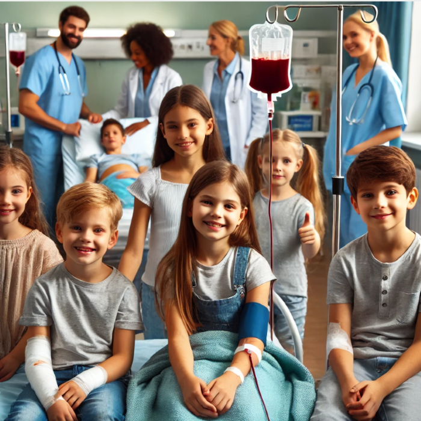

Blood donation is a vital act that saves millions of lives every year. Your donation can help patients in emergency situations, surgeries, and those suffering from severe illnesses.
Benefits of Blood Donation
Saves lives of people in need.
Enhances heart health by reducing iron levels.
Stimulates the production of new blood cells.
A free health check-up is provided during donation.
Reduce stress
Improve your emotional well-being
Benefit your physical health
Help get rid of negative feelings
Provide a sense of belonging and reduce isolation
Quotes:
Hadith! ✨
"Jisne ek jaan ko bachaya, goya usne poori insaniyat ko bacha liya."
(Surah Al-Ma'idah 5:32, Iska mafhoom ek Hadees se bhi milta hai)
You have a chance to save lives! If you don't take it, you may regret it!
Donate blood, save a life
Your blood can give someone another chance at life
Blood donation is the gift of life
Blood donors are lifesavers
One donation can make a huge difference
Every drop counts. Donate blood and be the reason for someone's heartbeat
By donating just one pint of blood, four lives can be saved. Imagine that !

Donate blood and be a hero
Blood types
Blood types are determined by the presence or absence of antigens on red blood cells. The two major blood type systems are the ABO system and the Rh system.
ABO system
The four blood types are A, B, AB, and O.
The presence or absence of A and B antigens on red blood cells determines the ABO blood type.
Rh system
The Rh factor is a protein that can be present (+) or absent (-).
If the Rh factor is present, the blood type is RhD positive.
If the Rh factor is absent, the blood type is RhD negative.
Common blood types
The eight most common blood types are A+, A-, B+, B-, O+, O-, AB+, and AB-.
Antigens
A and B: Two antigens that determine the major blood groups A and B
Rh factor: An inherited protein that can be present (+) or absent (-)
Blood type examples
O negative: A universal donor type because it lacks A, B, and RhD antigens.
Rh-negative:Can donate to both Rh-positive and Rh-negative people.
Rh-positive:Can only donate to other Rh-positive people.
Blood type compatibility:
A- blood is compatible with A- and O- blood.
A+ blood is compatible with A+, A-, O+, and O- blood.
AB- blood is compatible with AB-, A-, B-, and O- blood.
AB+ blood is compatible with AB+, AB-, A+, A-, B+, B-, O+, and O- blood.
Blood Types and Transfusion
There are very specific ways in which blood types must be matched for a safe transfusion. The right blood transfusion can mean the difference between life and death. Use the interactive graphic below to learn more about matching blood types for transfusions.
Also, Rh-negative blood is given to Rh-negative patients, and Rh-positive or Rh-negative blood may be given to Rh-positive patients. The rules for plasma are the reverse.
The universal red cell donor has Type O negative blood.
The universal plasma donor has Type AB blood.
Blood-Tips
Here are some tips if you want to donate blood:
Drink plenty of water the night and morning before you donate.
Eat breakfast to help keep your blood sugar up.
Eat iron rich foods for 2 weeks before your appointment; for example, spinach, whole grains, eggs, and beef.
Avoid fatty foods for twenty-four hours before you donate.
Avoid smoking on the day before donating. You can smoke 3 hours after donation.
Ask for a blanket if your hands or feet start to feel cold.
Have a snack after the donation.Rest for a few minutes enjoying your snack before leaving the donation site.
Eat a meal high in protein after your donation: beef, chicken or legumes are excellent choices.
You will not be eligible to donate blood if you have consumed alcohol 48 hours before donation.
Avoid heavy lifting and strenuous exercise for the rest of the day.